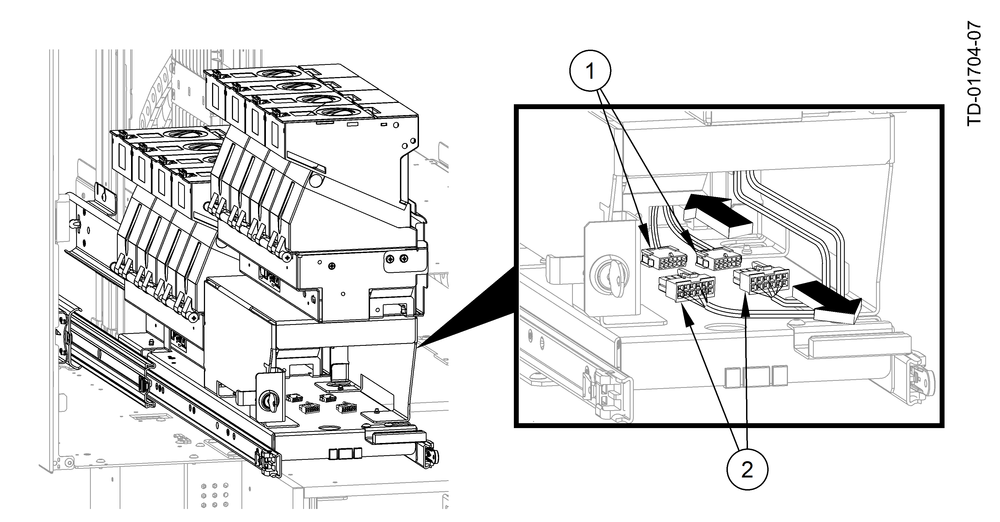

Remove the plug-in tie strap that secures the cables to the coin module on the coin tray.
Both coin modules that create the eight hopper coin module configuration are cabled together. Disconnect the USB and coin dispenser power cables from the coin module on the coin tray underneath the upper platform (Disconnecting Coin Module Cables for the Eight Hopper Coin Dispenser ).
Disconnecting Coin Module Cables for the Eight Hopper Coin Dispenser
1
USB and power cable for the four hopper coin module
2
USB and power cable for the eight hopper coin module
Using a long tip screwdriver, through the access holes in the coin tray, remove the four screws from underneath the coin module on the upper platform (Removing the Eight Hopper Coin Module ).
Removing the Eight Hopper Coin Module
1
Lift up coin module
2
Coin module on upper platform
3
Coin module screws (underneath the coin module on upper platform)